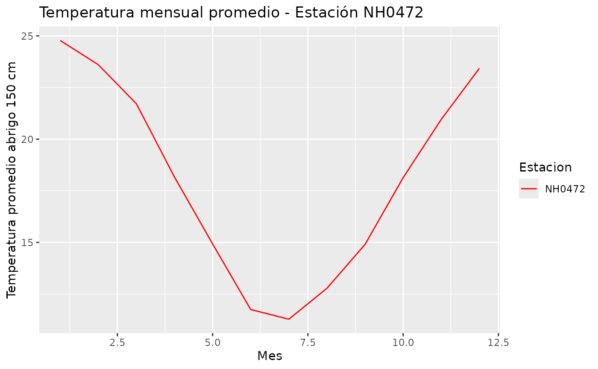

Introducción
El paquete meteorologia permite descargar, leer, procesar y visualizar datos meteorológicos provenientes del INTA.
A través de este paquete es posible: obtener automáticamente los datos de una estación meteorológica, generar resúmenes estadísticos, unir datos de múltiples estaciones, y visualizar la temperatura mensual promedio de forma sencilla.
Esta viñeta muestra el flujo de trabajo completo recomendado para usar el paquete.
Instalación
Instalá la versión de desarrollo desde GitHub:
# Instalar paquete devtools si no esta instalado
#install.packages("devtools")
# devtools::install_github("lizmartinez-droid/meteorologia")Luego cargá el paquete:
Funciones
Descargar y leer datos de una estación
La función leer_datos_estacion() obtiene los datos crudos correspondientes a una estación identificada por su código (por ejemplo “NH0472”).
¿Cómo funciona?
Construye automáticamente la URL del archivo CSV alojado en GitHub:
https://raw.githubusercontent.com/rse-r/intro-programacion/main/datos/
Si el archivo existe en ruta_archivo, no lo descarga: simplemente lo lee.
Si el archivo no existe, se descarga y guarda en esa ruta.
Finalmente, el archivo se lee como un tibble.
Ejemplo: cargar los datos de la estación NH0472
estacion1 <- leer_datos_estacion( "NH0472", "NH0472.csv" )
#> El archivo ya esta descargado, se procede a leerlo...
#> Lectura completada correctamente para la estacion NH0472.El resultado es un conjunto de datos con 20.425 filas y 35 columnas.
¿Qué variables incluye el dataset?
Todas las estaciones cuentan con variables esenciales como:
id: código de la estación
fecha: fecha de la medición
temperatura_abrigo_150cm: temperatura media diaria a 150 cm
temperatura_abrigo_150cm_maxima: temperatura máxima diaria
temperatura_abrigo_150cm_minima: temperatura mínima diaria
Además, se incluyen otras variables meteorológicas cuando están disponibles:
precipitacion_pluviometrica: precipitación en mm
granizo, nieve: indicadores de fenómenos extremos
heliofania_efectiva, heliofania_relativa: horas de sol
rocio_medio: punto de rocío
velocidad_viento_200cm_media, velocidad_viento_1000cm_media: velocidad del viento
radiacion_global: radiación solar
evapotranspiracion_potencial: pérdida de agua por evaporación y transpiración
Nota: Muchas variables pueden contener valores faltantes porque no todas las estaciones miden la misma información.
Crear una tabla resumen de temperatura
La función tabla_resumen_temperatura() permite obtener un resumen estadístico básico de la temperatura:
promedio,
desvío estándar,
valor máximo,
valor mínimo.
Ejemplo:
resumen_temp <- tabla_resumen_temperatura(estacion1)
resumen_temp
#> # A tibble: 1 × 5
#> id promedio_temperatura desvio_estandar temp_max temp_min
#> <chr> <dbl> <dbl> <dbl> <dbl>
#> 1 NH0472 18.0 5.94 42.1 -8Esto facilita visualizar rápidamente el comportamiento térmico de la estación.
Graficar la temperatura mensual promedio
La función grafico_temperatura_mensual() calcula el promedio mensual de temperatura para cada estación y lo representa mediante un gráfico de líneas.
Argumentos:
datos: tibble con una o varias estaciones
colores: vector de colores a usar en la gráfica
titulo: texto opcional
Si no se proporcionan suficientes colores, el paquete asigna colores aleatorios.
Ejemplo:
grafico_temperatura_mensual( estacion1, c("red"), "Temperatura mensual promedio - Estación NH0472" )
Conclusión
El paquete meteorologia proporciona un flujo de trabajo completo para:
descargar datos de estaciones meteorológicas,
analizarlos mediante un resumen estadístico,
combinarlos cuando hay varias estaciones,
visualizarlos de manera clara mediante gráficos.
De esta forma, facilita el análisis exploratorio del clima y el estudio de tendencias meteorológicas en Argentina.